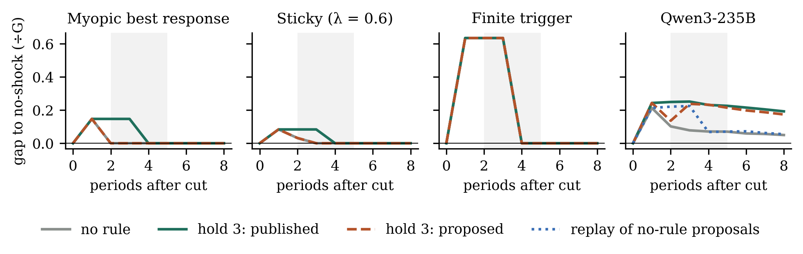
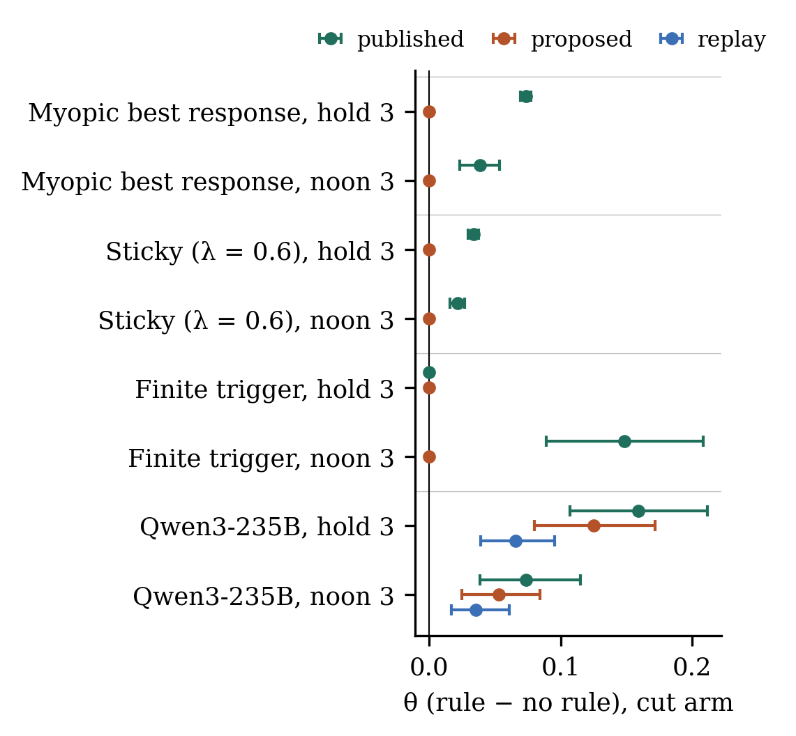

When Execution Looks Like Punishment
Plan after the Codex review, plus what the pilot already shows. Five decisions for you are listed first. Deadline Mon 26 Oct 12:59 Berlin; target submit 12:15.
The claim
A platform rule that holds a new price for three periods changes the published prices after a rival's price cut, and it also changes what the AI agent proposes next, because the agent learns from the prices it sees published. So logging proposals exposes the platform's effect but does not tell you how the model would behave without the rule.
Collusion definition we use: the market one (prices above the competitive level, sustained by punishing rivals who cut). We test whether the punishment signature that audits look for can come from the platform rather than the model. One LLM against a scripted rival, so this is an audit-validity study, not evidence of collusion between agents.
Your decisions
1. How we write the paper
The official template is a Google Doc. The rules say judges skip papers they can't follow, and the template asks that the team writes the final text.
Recommend: I draft in Markdown and convert it to a Word file with the template's styles (already downloaded to paper/apart-template.docx). You open it in Google Docs, rewrite the intro, contributions and discussion in your own words, and export the PDF.
2. What the AI agent knows
Codex suggested giving the agent the demand formula. The pilot ran without it: the agent sees only its published prices, the rival's prices, its sales and its profit, and is not told about the lock.
Recommend: keep it as piloted, which is closer to a real deployment. Changing the prompt now would mean another pilot.
3. One optional extra run
Tell the agent about the lock in its prompt and see whether its proposals still get stuck. About 10 minutes of calls.
Recommend: run it only if the analysis is done by 00:30.
4. Title
Recommend: "When Execution Looks Like Punishment: Price Commitments in LLM Pricing Audits" (from Codex). Alternative: "Audit the Whole Stack".
5. Author line and code
I need your author name and affiliation, and whether the code goes in a public GitHub repo. The repo is optional; judges score only the PDF.
What the pilot shows
Same market history, rival cuts its price by €8 for one period, then returns. Left: a scripted myopic agent. Right: Qwen3-235B, pilot history 5, repeat 0. Solid lines are published prices, dashed lines are proposals.
Numbers so far
R = how far prices stay below the no-shock branch in periods 2–5 after the cut, as a share of the gap between the competitive price (€36) and the monopoly price (€51.75). θ = R with the lock minus R without it. Brackets show 95% bootstrap intervals across market histories.
| Agent | n | θ published | θ proposed | R proposed, no lock | Reads as |
|---|---|---|---|---|---|
| Fixed price | 16 | 0.000 | 0.000 | 0.000 | plumbing check passes |
| Myopic best response | 16 | 0.073 [0.069, 0.077] | 0.000 | 0.000 | lock-only persistence; formula gives 0.076 |
| Sticky, λ = 0.6 | 16 | 0.034 [0.030, 0.038] | 0.000 | 0.008 | persistence inside the agent |
| Sticky, λ = 0.3 | 16 | 0.005 [0.002, 0.009] | 0.000 | 0.054 | persistence inside the agent |
| Finite trigger | 16 | 0.000 | 0.000 | 0.317 | real punishment, lock adds nothing |
| Qwen3-235B (pilot) | 4 | 0.201 [0.145, 0.258] | 0.170 [0.123, 0.216] | 0.044 [−0.019, 0.103] | the lock changes the proposals too |
| Qwen, replay through lock | 4 | 0.055 [0.020, 0.094] | — | — | what the lock alone would do |
Main pilot finding: the lock adds 0.20 to published persistence for Qwen. Holding the prices alone (the replay) explains only 0.055. The rest comes from the agent itself staying low after it sees its own price held down.


Pilot uses 4 histories and 2 repeats, and is excluded from the main analysis. Sham check (no-op vs no-op): published R ≈ −0.01 to −0.02, so sampling noise is small next to 0.17. The main run uses 16 new seeded histories.
What the Codex review changed
| Severity | Issue | Fix | Status |
|---|---|---|---|
| fatal | Two gates were wrong: a trigger's θ should be 0, and no-op runs can differ between with and without the lock | Positive control is R > 0 with recovery; duplicate check only within the same executor | done |
| fatal | Demand can go negative at high prices | Demand floored at 0; €51.75 used only as a continuous reference | done |
| major | Trigger fired on the rival's return from a raise | Fixed reference price from the warm-up | done, tested |
| major | Lock rules not exact | Blocked proposals dropped; a 1-period lock behaves like no lock | done, tested |
| major | Window h = 2–5 mixes locked and free periods | Keep it as the main measure; also show all 8 periods, h = 2–3 and h = 4–8 | in analysis |
| major | 12 histories, 2 repeats too thin | 16 seeded histories, 4 repeats | running |
| major | Auditor-verdict figure overclaims | Replaced by the replay comparison | done |
| best addition | Open-loop replay | Run the no-lock proposals through the lock afterwards. The gap to the real lock run is the extra effect of the agent adapting. | coded, no API cost |
| cut | Second model, lock-length sweep, disclosure factor | Out of scope tonight (disclosure only as the optional run above) | — |
Rules that shape the paper
- Up to 8 pages; references and appendices don't count. The template suggests about 4: intro and related work 1 page, methods and results 2.5, discussion 0.5.
- Abstract of 150–250 words. Mandatory "Limitations and Dual-Use / Ethical Considerations" appendix and LLM Usage Statement.
- Prior work must be disclosed: the Oct 13 idea briefs and the Oct 19 and 23 Codex reviews were pre-sprint ideas, and all code was written during the sprint.
- Judges score impact and innovation, execution quality, and presentation and clarity, 1–5 each. Only the PDF is scored.
- Deadline Mon 11:59 UTC = 12:59 Berlin. A corrected PDF means a new submission.
Schedule (Berlin)
| Time | Work | Gate |
|---|---|---|
| 23:40–00:00 | You review this page and answer the 5 decisions | A design change means rerunning the main run (~20 min) |
| 00:00–00:45 | Main run complete → completeness check, analysis, 3 figures | No missing trajectories; failed calls never filled in with the last price |
| 00:45–02:00 | I draft the full paper in the template structure, with numbers from one results file | Word file opens with the template's styles |
| 02:00–07:00 | Sleep | — |
| 07:00–09:30 | You rewrite the intro, contributions and discussion in your voice; I check every number | Abstract 150–250 words |
| 09:30–11:00 | Appendix: limitations and dual use, disclosure, prompt, run diagnostics | All claims traced to results/ |
| 11:00–12:15 | Final read, PDF export, submit, confirm | 12:59 hard deadline |
Figures planned
- Figure 1. Price paths, proposed vs published, for the myopic agent and Qwen, with and without the lock (as above, averaged over histories).
- Figure 2. θ for published prices, proposed prices and the replay, per agent, with intervals.
- Figure 3. Lag profile, periods 1–8 after the cut, for Qwen: real lock run vs replay vs no lock.
Files: PLAN.md, codex-plan-review-2026-10-25.md, harness/, tests/, runs/.